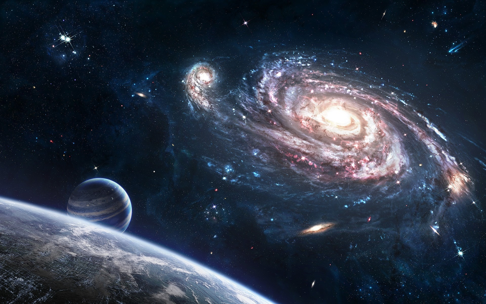

Cosmo Squad é uma série de ação,suspense e aventura que mostra a jornada de ex-bandidos que se tornam heróis e salvadores do mundo, isso devido a ameaças universais, inimigos tão poderosos no nivel de Deuses.
Um esquadão formado por personagens que eram ex-bandidos ou procurados que buscam uma forma de mudar sua vida
Diante o vasto universo também existem vários inimigos poderosos que irão desafiar nossos heróis e ameaçar o equilíbrio do dele.
Tudo se inicia com dois deuses chamados Vaite e Escuridão, os dois são os deuses mais poderosos de todos e controlam o que chamamos de Multiverso, eles escreveram toda a historia do que aconteçeu, está acontecendo e o que ainda vai acontecer e são o desafio final. Vaite inclusive foi o responsável pela extinção da humanidade na terra, pois a história principal ocorre mais de 6 Mil anos após a extinção humana do planeta. Vaite em seu ponto de vista, não via os humanos como uma raça digna de viver em um planeta tão rico em recursos e qualidade de vida, para ele os humanos eram uma raça "atrasada". Por isso decide extingui-los da terra e dar início a uma nova raça, a que batizou de inicialmente de Blietizes, que nada mais são do que os animais evoluidos, Vaite pegou as melhores características dos humanos, como a inteligência, andar em duas pernas e seus estintos e misturou aos animais que conhecemos hoje, assim a nova raça começa a povoar a Terra e os lugares que antes pertenciam aos humanos. Vaite após criar essa nova espécie, fica muito orgulhoso de sí mesmo e decide criar uma versão dele mesmo como um Blietzer, assim surge Léo ou Leonard. Léo não é o Vaite, e sim um espelho do Deus da criação em sua espécie.
Existem tambem muitos seres e Deuses perigosos e poderosos ao longo do vasto universo. Um exemplo são os gêmeos Alixa e Veritas, dois irmãos muito poderosos.
Alixa e Veritas estão em uma busca por uma joía chama Dreamcore Stone, uma relíquia que se encontra no centro do Universo e o alimenta para existir. Os irmãos acreditam que o universo atual não é digno de continuar existindo e querem usar a pedra para criar um novo, onde eles seriam os governantes de tudo.
Os dois encontram uma pista da pedra na Terra, com o Léo e decidem ir até ele.
Alixa e Veritas chegam a Terra atrás de Léo para questioná-lo sobre a pedra Dreamcore, Léo diz não saber sobre sua localização, o irmãos desconfiam e acabam lutando, porém Léo sozinho não dá conta dos dois e acaba perdendo, os gêmeos que gostam de desafios, propõem um acordo com Léo, eles dariam a Léo o prazo de 1 ano para que ele formasse um grupo com os heróis mais poderosos da Terra para lutarem contra eles, caso vencessem, os irmãos deixariam a Terra em paz, mas se perdessem, Léo teria que dar a localização da Pedra Dreamcore. Léo aceita e assim a corrida contra o tempo se inicia.
NEOTS
Neots é um gato preto de olhos verde, onde sua genética lhe deu 3 caudas de raposa,o que segundo a ciência deveria ser impossível. Neots antes de entrar pra Cosmo Squad era o que ele se intitulava O Justiçeiro Negro, e era procurado em diversos países.Neots é conhecido por sua alta velocidade de ataque e por ser muito inteligente em combate. O que ele demorou para saber era que possuía um grande poder oculto dentro de sí, a Fênix.
LEONARD (Léo)
Leornad ou Léo, uma raposa roxa que foi criado pelo própio Vaite como seu espelho na Terra, como se fosse ele em sua raça, Léo usa como arma um tridente dourado muito poderoso. mais que ainda não conhecia todo seu potencial. Léo também possui parte da mente do Vaite dentro de sua cabeça, algo muito cobiçado pelo universo. Léo foi quem criou o grupo e nomeou de Cosmo Squad, mas antes de formar o esquadrão, ele já era dono de uma empresa milionária de exportações para o exterior chamada Top Hats.
ORONTE
Oronte é um lobo de pelagem cinza e olhos azuis, não só isso mais também muito habilidoso Nas artes marciais, também é conhecido como o Ninja mais perigoso do mundo, apelidado de MORTE BLANCA. Oronte usa 3 katanas bem afiadas para enfrentar seus oponentes, as que ele chama de as 3 Lâminas da Morte. Antes de entrar para a Cosmo Squad ele era um temido caçador de recompensas impiedoso.
LIVY
livy é uma gata branca de olhos azuis, ela foi contratada por Léo para ajudá-lo a encontrar os sujeitos em seu radar para formar o esquadrão, ela quem recruta Oronte e depois é convidada para entrar no grupo. Livy antes de entrar no grupo era uma agente do FBI, e quando foi contratada, era uma caçadora de recompensas. No início, a proposta foi rejeitada, pois Neots que no começo era seu rival, estava no esquadrão, e ela não suportava ficar perto dele, com o tempo ela aceitou o convite, e seu ódio por Neots pouco a pouco foi sumindo.
WISE
Wise é um leopardo muito habilidoso em velocidade e poderes com magia e essência de Necromancer, o pai dele inclusive era um grande mestre mago que lhe ensinou tudo o que sabe atualmente. Wise sempre apresentou desde pequeno, grande ptencial com magia, e foi treinado por seu pai mesmo, porém um acidente com seu povo o fez se afastar de todos e passou a viver em uma torre sozinho, até que Léo chega e o convida para entrar para a Cosmo Squad.
Existem diversas fontes de energia, poderes e ligações cósmicas ao longo do vasto universo, energias que alimentam toda a sua estrutura, que permitem que o universo possa existir, energias que alimentam planetas e estrelas, até mesmo fontes de poder que alimentam galáxias inteiras, e uma dessas energias mais antigas é a Fênix, batizada assim por um grupo de seres espirituais muito antigos, seres que estavam desde o início de tudo, desde a primeira estrela e luz criada. Seu nome cósmico é Feunnomus, batizada de Fênix.
A Feunnomus recebe esse nome devido ao estilo e origem de seu poder, que vem da derivação do fogo e das chamas, energia que ajudou na criação de tudo, e devido a Fênix ser uma figura muito antiga e sempre relacionada as chamas, esse grupo espiritual que dominou o fogo, nomeou esse poder de Fênix.
O poder da Fênix existe desde de tempos que não podemos calcular, existia bem antes mesmo do próprio grupo espiritual que a dominou, teoriaza-se que a Fênix pode capacitar seu usuário se tornar tão poderoso que em seu nível máximo poderia destruir planetas e até galáxias inteiras.
O antigo grupo espiritual que no passado dominou o poder da Fênix, criou divisões desse poder, conhecidas como as variantes da Fênix,cada uma mais poderosa.
Após os gêmeos serem derrotados, Léo decide destruir a bússola que levava até a o centro do universo onde se encontrava a pedra Dreamcore, para que mais ninguém fosse atrás dela com más intenções. E a Terra teve paz por... 2 meses.
O que todos não esperavam, era que alguém estava observando a recém formada Cosmo Squad, seu nome é GROX.
Grox estava observando nossos heróis desde o começo da luta com os gêmeos com seu super computador, ele observou cada segundo daquela batalha, analisando e estudando os movimentos de cada um, milímetro por miímetro.
Grox é um bandido muito perigoso e poderoso que busca nada além da perfeição, e durante sua enfâme caçada, ele elimina todos aqueles que julga inferiores a ele, matando assim muitos povos e pessoas inocentes, segundo ele tudo pela perfeição.
Grox em muitas de suas pesquisas acaba descobrindo sobre a existência do Vaite, e o proclama como o verdadeiro ser perfeito, assim deseja ser como ele e possuir sua "perfeição". Grox em certo momento e de alguma forma acaba descobrindo que Léo possui uma parte da consciência de Vaite em sua mente, e caso ele pegasse essa parte do Vaite ele se tornaria assim o ser mais perfeito do mundo e de brinde se tornando imortal, bastava fundir sua mente com a consciência de Vaite.
Assim Grox começa sua busca pelos membros da Cosmo Squad, e envia um áudio com tom misterioso a eles com a intenção de atraí-los para uma batalha para que Grox visse de perto seus poderes.
Grox os atrai para um local afastado chamado Crystal Cânion, onde uma nova batalha se inicia, dessa vez Grox era muito mais forte e inteligente do que os gêmeos Alixa e Veritas, o que mostrou que o desafio seria muito maior. Grox parecia intocável, sempre se mostrando superior a nossos heróis.
A hisória continua com uma batalha grande se iniciando...